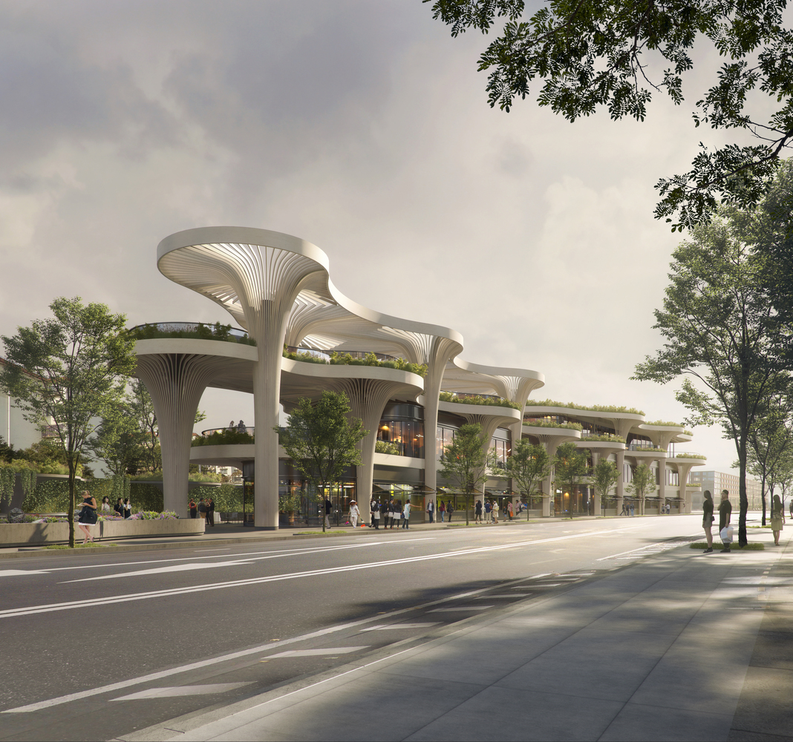
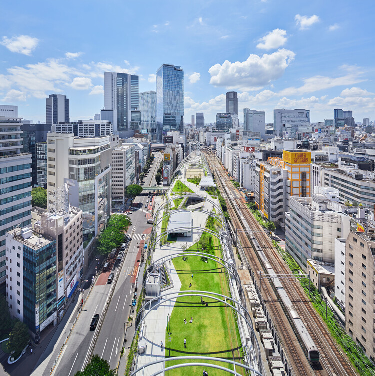
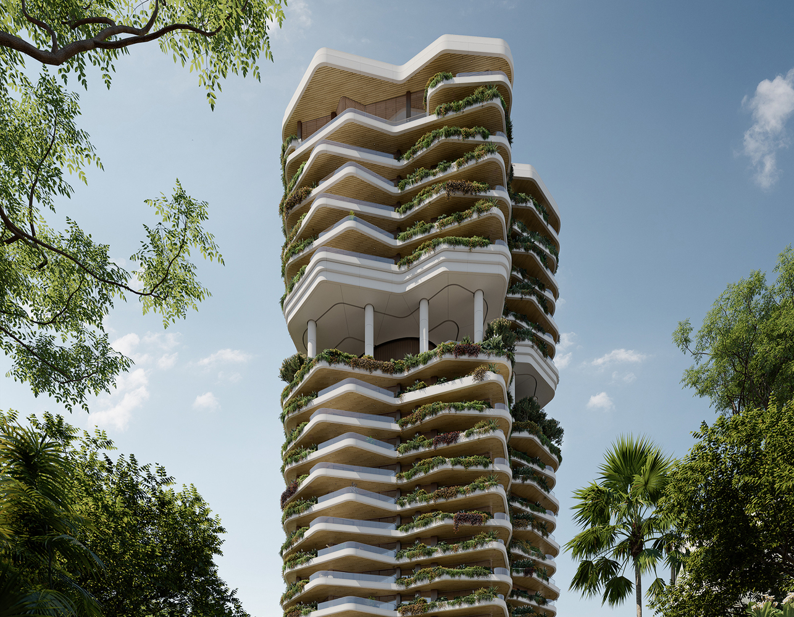
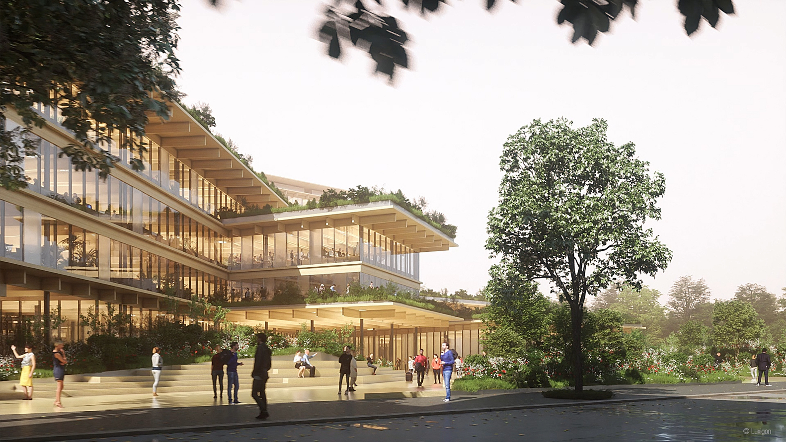
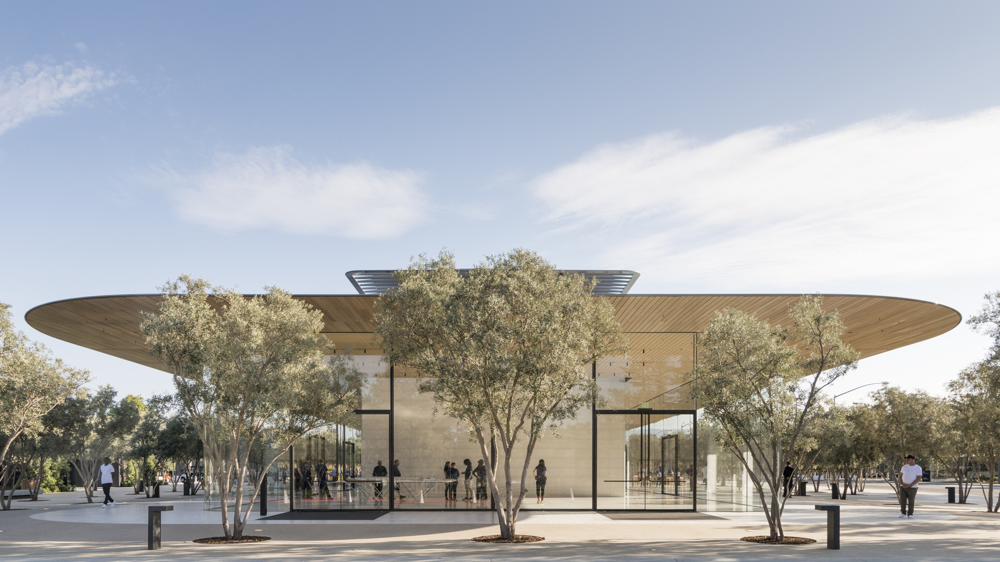

Page One
Page Two
Page Three
Page Four
EXAMPLE PROJECTS
Biophilic marketplace

Regenerative stategies for cities post pandemic

Biophilic response to wood
Biophilic residential design

Biophilic office design

Bringing the outdoors inside
